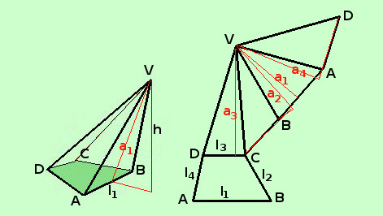
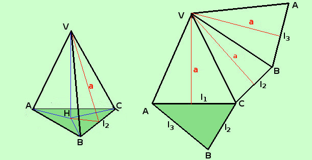
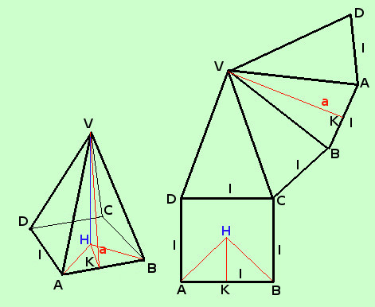

|
 Consideriamo come primo esempio una piramide obliqua, in tal caso dobbiamo avere la pazienza di calcolare la superficie faccia per faccia, perche' le facce laterali generalmente avranno basi ed apoteme diverse una dall'altra Quindi dovremo dire
Da notare che, nella figura considerata, l'apotema a2 ed a4 delle facce VBC e VAD cade fuori dalla base BC ed AD delle facce stesse Per la superficie totale sara' sufficiente aggiungere l'area di base
 Se la piramide e' retta la situazione cambia: qui le facce laterali e avranno apoteme uguali Stavolta facciamo la formula per una piramide retta triangolare. Naturalmente il numero dei termini da sommare dipende sempre dal numero delle facce
Ast = Asb + Asl = Asb + Per la superficie totale sara' sufficiente aggiungere l'area di base
 Qualcosa di piu' si puo dire per la piramide regolare: infatti avremo che tutti i lati del poligono di base sono uguali e quindi saranno uguali le misure dei lati di base e delle apoteme delle facce laterali (anzi qui le stesse facce laterali saranno congruenti) Quindi potremo scrivere
Qui devi fare molta attenzione a distinguere fra apotema del poligono di base (HK nella figura) ed apotema a della piramide VK: la prima e' la proiezione della seconda Se poi vogliamo calcolare l'area della superficie totale Ast dovremo sommare alla superficie laterale l'area di base
Naturalmente, puoi farti la formula specifica per ogni tipo di piramide regolare, ma, secondo me, non ne vale la pena |
||||||||||||||||||||||||||||||||||||||||||||||||||||||||||||

|

|

|

|